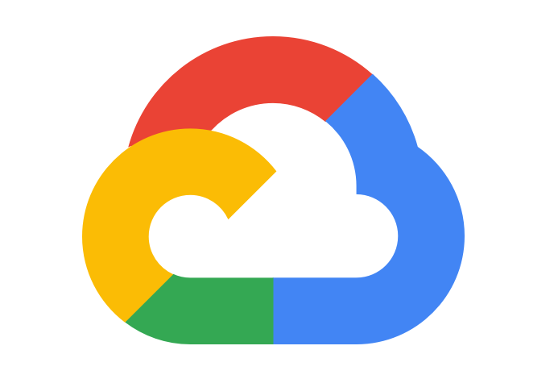

Software Engineering
Software engineering is the systematic application of engineering approaches to the development of software.When the first digital computers appeared in the early 1940s the instructions to make them operate were wired into the machine. Practitioners quickly realized that this design was not flexible and came up with the "stored program architecture" or von Neumann architecture. Thus the division between "hardware" and "software" began with abstraction being used to deal with the complexity of computing.
Software engineering (SE) is the profession concerned with specifying, designing, developing and maintaining software applications by applying technologies and practices from computer science, project management, and other fields.
SE applications are used in a wide range of activities, from industry to entertainment. Software applications improve user productivity and quality of life. Application software examples: office suites, video games, and the world wide web. System software examples: embedded systems and operating systems.
Data Science
Data science is a multidisciplinary approach to extracting actionable insights from the large and
ever-increasing volumes of data collected and created by today’s organizations. Data science
encompasses preparing data for analysis and processing, performing advanced data analysis, and
presenting the results to reveal patterns and enable stakeholders to draw informed conclusions.
Data preparation can involve cleansing, aggregating, and manipulating it to be ready for specific types of processing. Analysis requires the development and use of algorithms, analytics and AI models. It’s driven by software that combs through data to find patterns within to transform these patterns into predictions that support business decision-making. The accuracy of these predictions must be validated through scientifically designed tests and experiments. And the results should be shared through the skillful use of data visualization tools that make it possible for anyone to see the patterns and understand trends.
Open source technologies are widely used in data science tool sets. When they’re hosted in the cloud, teams don’t need to install, configure, maintain, or update them locally. Several cloud providers also offer prepackaged tool kits that enable data scientists to build models without coding, further democratizing access to the innovations and insights that this discipline is making available.
Data preparation can involve cleansing, aggregating, and manipulating it to be ready for specific types of processing. Analysis requires the development and use of algorithms, analytics and AI models. It’s driven by software that combs through data to find patterns within to transform these patterns into predictions that support business decision-making. The accuracy of these predictions must be validated through scientifically designed tests and experiments. And the results should be shared through the skillful use of data visualization tools that make it possible for anyone to see the patterns and understand trends.
Open source technologies are widely used in data science tool sets. When they’re hosted in the cloud, teams don’t need to install, configure, maintain, or update them locally. Several cloud providers also offer prepackaged tool kits that enable data scientists to build models without coding, further democratizing access to the innovations and insights that this discipline is making available.
Cloud
Cloud computing is the delivery of different services through the Internet. These resources include tools and applications like data storage, servers, databases, networking, and software.Cloud computing is named as such because the information being accessed is found remotely in the cloud or a virtual space. Companies that provide cloud services enable users to store files and applications on remote servers and then access all the data via the Internet. This means the user is not required to be in a specific place to gain access to it, allowing the user to work remotely.
Cloud computing can be both public and private. Public cloud services provide their services over the Internet for a fee. Private cloud services, on the other hand, only provide services to a certain number of people. These services are a system of networks that supply hosted services. There is also a hybrid option, which combines elements of both the public and private services.
Topic of My Interest
ML

Machine learning is an application of artificial intelligence (AI) that provides systems
the ability to automatically learn and improve from experience without being explicitly
programmed. Machine learning
focuses on the development of computer programs that can access data and use it to learn
for themselves.
The process of learning begins with observations or data, such as examples, direct experience, or instruction, in order to look for patterns in data and make better decisions in the future based on the examples that we provide. The primary aim is to allow the computers
learn automatically without human intervention or assistance and adjust actions accordingly.
The process of learning begins with observations or data, such as examples, direct experience, or instruction, in order to look for patterns in data and make better decisions in the future based on the examples that we provide. The primary aim is to allow the computers
learn automatically without human intervention or assistance and adjust actions accordingly.
#TensorFlow
#PyTorch
#Numpy
iOS

iOS is a mobile operating system developed by Apple. It was originally named the iPhone
OS,
but was renamed to the iOS in June, 2009. The iOS currently runs on the iPhone, iPod
touch, and iPad.
Programming for iOS is primarly done using either Swift or Objective-C which is also Apple own Programming Language. But the iOS Development Skill set not only applied for iOS itself, it can also be applied to iPad OS, Watch OS,tvOS, and Mac OS.
iOS Development can only be done using Xcode and Mac. Xcode is Apple’s integrated development environment (IDE) that you use to build apps for Apple products including the iPad, iPhone, Apple Watch, and Mac. Xcode provides tools to manage your entire development workflow—from creating your app, to testing, optimizing, and submitting it to the App Store.
Programming for iOS is primarly done using either Swift or Objective-C which is also Apple own Programming Language. But the iOS Development Skill set not only applied for iOS itself, it can also be applied to iPad OS, Watch OS,tvOS, and Mac OS.
iOS Development can only be done using Xcode and Mac. Xcode is Apple’s integrated development environment (IDE) that you use to build apps for Apple products including the iPad, iPhone, Apple Watch, and Mac. Xcode provides tools to manage your entire development workflow—from creating your app, to testing, optimizing, and submitting it to the App Store.
#Xcode
#Swift
#SwiftUI
Cloud & Web

Google Cloud Platform (GCP), offered by Google, is a suite of cloud computing services
that runs on the same infrastructure that Google uses internally for its end-user
products,
such as Google Search, Gmail, file storage, and YouTube.
Google Cloud Platform is a part of Google Cloud, which includes the Google Cloud
Platform public cloud infrastructure,
as well as Google Workspace (G Suite), enterprise versions
of Android and Chrome OS, and application programming interfaces (APIs) for machine
learning and enterprise mapping services.
Node.js is an open-source, cross-platform, back-end JavaScript runtime environment that runs on the Chrome V8 engine and executes JavaScript code outside of browser.
TypeScript is a typed superset of JavaScript that compiles to plain JavaScript.
Node.js is an open-source, cross-platform, back-end JavaScript runtime environment that runs on the Chrome V8 engine and executes JavaScript code outside of browser.
TypeScript is a typed superset of JavaScript that compiles to plain JavaScript.
#GCP
#NodeJS
#Typescript